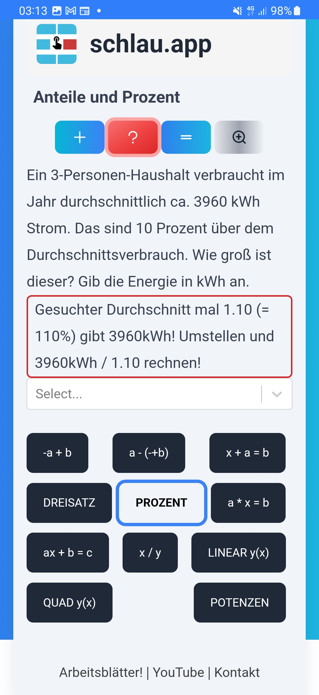

Prozentrechnung ist extrem wichtig im Alltag. Zum Beispiel, um Medieninfo und Nachrichten zu verstehen! Denn es gibt zwar mehrere Möglichkeiten, Anteile zu benennen - z.B. Dezimalbruch 0.25, Bruch 1/4, "eine Viertel", 25% - aber die Prozentangabe kommt besonders häufig vor. In einigen Fällen, z.B. beim Kochen, sind einfache Zahlenverhältnisse üblich. Du solltes alle (!) Formate kennen, um mit Anteilen und Verhältnissen umzugehen. Einige Aufgaben, die die Mathe-App schlau für dich erfindet:
Schau dir die Hilfs- und Erklärtexte an (roter und grauer Button). Du musst dir die Formulierungen nicht so merken, finde gern deine eigenen. Wichtig ist nur: lerne durch Wiederholung, die Mathematik von Prozent und Anteil sicher zu können! Dabei hilft dir schlau.app und sucht dir immer neue Rechenbeispiele raus.
Mache es dir zur Gewohnheit, Prozentrechnung in den Alltag hineinzunehmen. Z.B. Wenn es bei einer Abstimmung heißt, der Mehrheit war hauchdünn mit nur 0.5 Prozent, dann überlege wirklich, wieviele Leute das sind!